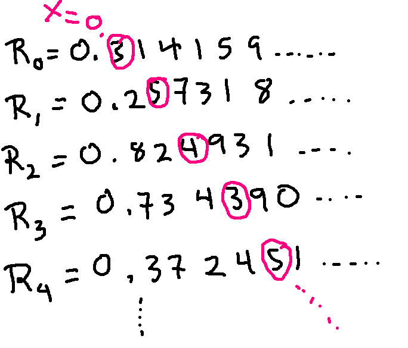

Now let's prove that there are uncountable sets.
Claim: the set of all infinite binary sequences is uncountable.
These are sequences of 0's and 1's that keep going forever on the righthand end.
We're going to use proof by contradiction. So suppose that the set of infinite binary sequences is countable. That means that we can put all infinite binary sequences into a list indexed by the natural numbers: \(S_0, S_1, S_2, \ldots\).
The trick we'll use to show a contradiction is called "diagonalization" and is due to Cantor.
We'll write out our list of infinite sequences. I'm picking some random values for the sequences to illustrate what's happening, but the actual proof doesn't depend on the specific values.
Now, let's make a new infinite bit vector X from the values on the diagonal of this chart. That is \(X(k) = S_k(k)\).
Now let's define a vector Y that has exactly the opposite bit values as X. Depending on whether you lean towards math or low-level programming, you might write this as \(Y(k) = 1- S_k(k)\) or as \(Y(k) = not(S_k(k))\).
Y can't be any of the vectors in our list \(S_0, S_1, S_2, \ldots\). Suppose we pick some vector \(S_k\) on the list. Then Y and \(S_k\) have different values at position k. So they aren't equal.
So we have a contradiction: we assumed that our list contained all infinite binary sequences, but Y isn't on the list. Therefore, we must have been wrong in our assumption the set was countable.
Yes, this is an extremely odd claim and an unusual sort of proof. So you may need some time to get used to it. If you don't feel like you completely understand it by the end of this term, you'll get a second chance when you take CS 374.
There's a couple immediate consequences of this theorem, largely because we can choose to see a bit vector in several different ways.
First, we can think of an infinite bit vector as a function from \(\mathbb{N}\) to {0,1}. Each position in the vector becomes an input to the function. So the set of all functions from \(\mathbb{N}\) to {0,1} is uncountable.
An infinite bit vector can also be used to represent a set S of natural numbers. Each position in the bit vector tells us whether the corresponding natural number is in S. In the example below, S contains 0, 1, 5, 6, and 9, but not 2,3,4, 7, 8, 10, 11. For a finite subset, the vector would become all zeroes after a certain point.
| 0 | 1 | 2 | 3 | 4 | 5 | 6 | 7 | 8 | 9 | 10 | 11 | ... |
| 1 | 1 | 0 | 0 | 0 | 1 | 1 | 0 | 0 | 1 | 0 | 0 | ... |
Each subset of \(\mathbb{N}\) corresponds to exactly one infinite bit vector, and vice versa. So, since the set of all infinite bit vectors is uncountable, \(\mathbb{P}(\mathbb{N})\) is also uncountable.
Now, let's show that the interval (0,1) frome the reals is not countable, which will imply that the full set of reals is uncountable. You might think that we could simply interpret a bit vector as the fractional part of a number. However, remember that each number ending in all zeroes is equivalent to a closely-related number ending in all 1's. To avoid complex discussion about whether this is or isn't a problem, let's do a second diagonalization proof, tweaking a few details.
For this proof, we'll represent each number in base-10. So suppose that (0,1) is countable. Then we can make a list of all numbers in (0,1) indexed by the integers: \(R_0, R_1, R_2, \ldots \). Here's a picture:
Here's our diagonal number X:

To avoid issues with trailing 0's and 9's, let's make our new number Y by mapping each digit 3 to a 4, and then every other digit to 3. For this example, we'd have \(Y = 0.43343...\). Y can't be equal to any number \(R_k\) in the list, because it differs from \(R_k\) at the kth position after the decimal point. And the difference doesn't involve swapping 0 and 9, so it's not a case where the two decimal representations might be equivalent.
We have a contradiction: we assumed we had a list of all numbers in (0,1) but we've constructed a number Y that isn't in the list. So (0,1) isn't countable.
Suppose we considered a smaller set T that contains bit vectors that become all zeroes after a certain point. Let's look at where a diagonalization proof would fail. We can put the elements of T into a list and construct our vector Y. However, Y is not guaranteed to be in the set T, because it might not end with zeroes. For example, suppose we order T by the length of the section up through the last one.
With this ordering, Y will end up entirely filled with 1's. So it's not in the set T.
Even if we extend T to include sequences that end in repeating patterns (e.g. like certain rational numbers), we'll have the same problem making the proof go through. The proof works for the full set of infinite, or for the reals, because they are big enough and unconstrained enough that our constructed vector Y must still live in the set.
If we enlarge an uncountable set, the result will be uncountable. So, for example, the set of all functions from \(\mathbb{N}\) to {0,1} is uncountable, so the larger set of all functions from \(\mathbb{N}\) to {0,1,2,3} is uncountable. Since the names of the output values don't matter, the set of all functions from \(\mathbb{N}\) to any set A is uncountable, as long as A has at least two elements.
If a set X incorporates all of an uncountable set, then S will be uncountable. For example, the complex numbers are uncountable because they contain the reals as a subset. The set of trees with real number labels on the nodes is uncountable. Even though the reals aren't a subset of this set of trees, we can pick out (at least) one tree that corresponds to each real number.
You do need to make sure your construction is using the whole uncountable set (e.g. the reals) or a large enough section of it (e.g. the positive reals, the interval (0,1)). Consider the set P= {\(\pi\), e, \(\sqrt{\pi}\), 4,7}. Although there are three irrational numbers in the set P, P still has only five members. So P is countable.
Our diagonalization proof used the natural numbers to index the list of bit vectors or the list of real numbers. The method will also work for other choices of index set. So we can use the method to show that \(\mathbb{P}(A)\) is larger than A, for any set A (finite or infinite). And \(\mathbb{P}(\mathbb{P}(A))\) is larger than \(\mathbb{P}(A)\). So there are an infinite number of infinite cardinalities. (Mindblowing!)